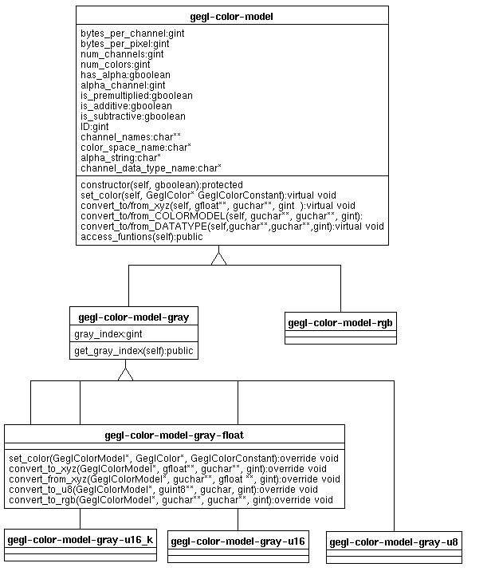

|
Caroline Dahllof<caro@rhythm.com> Introduction
|
| Introduction
This document explains how GEGL defines and uses different color models. There exist a separate classes for each combination of data type and
color model that GEGL uses. For example there is a gegl-color-model-gray-float,
gegl-color-model-rgb-float, gegl-color-model-gray-u8. All the implemented(???)
color models implements the function that allows it to convert from and
to the xyz color space, they also implement some of the functions that
allows it to convert to the other data types in the same color model and
some of the functions that allows it to convert to other color spaces with
the same data type. If there is no function that allows a direct way of
going from one color model to another color model, the xyz_to/from functions
are used to transform the color space into another color space.
|
| Class Diagram

|
| Constructor
The constructor of all the gegl-color-model take a gboolean argument
which defines weather or not the color model has an alpha channel or not.
|
| References
http://www.mindspring.com/~calvinw/geglClasses.html
|